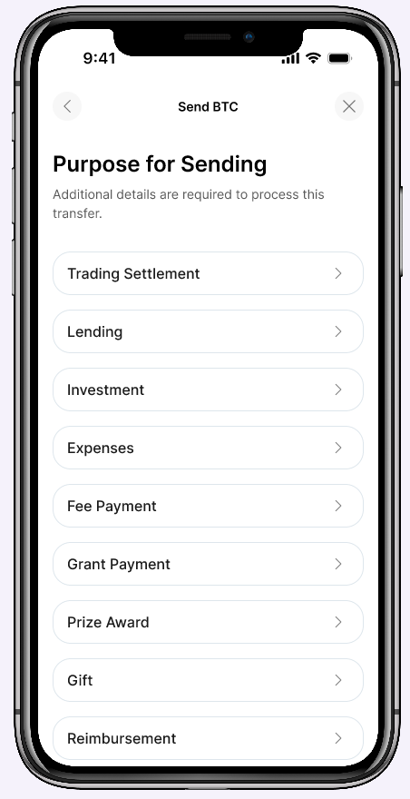
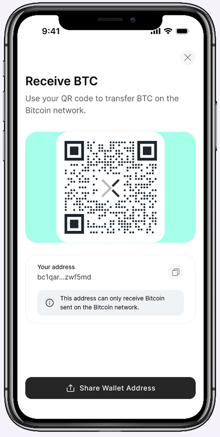
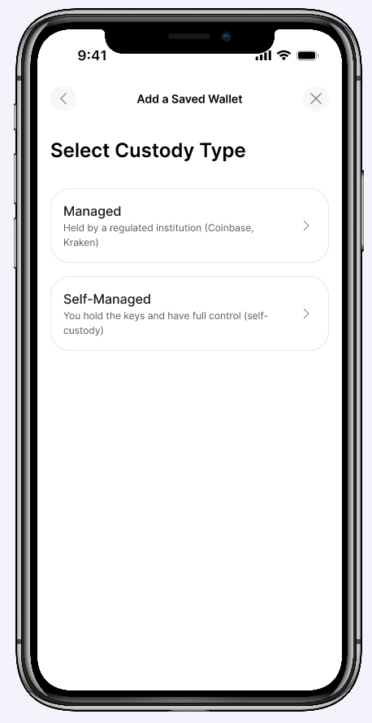
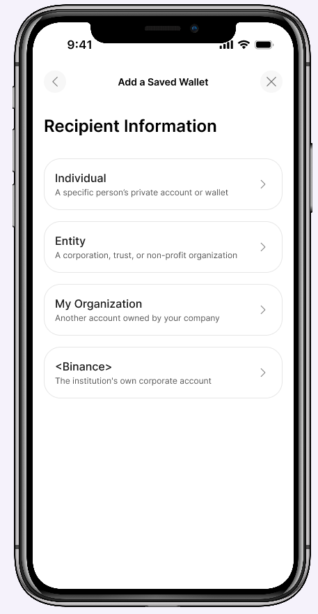
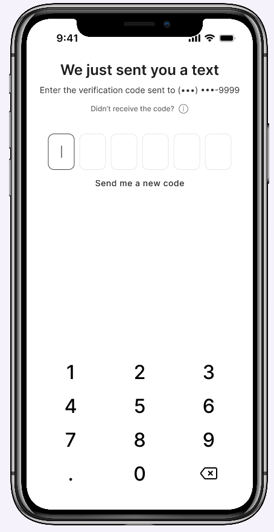
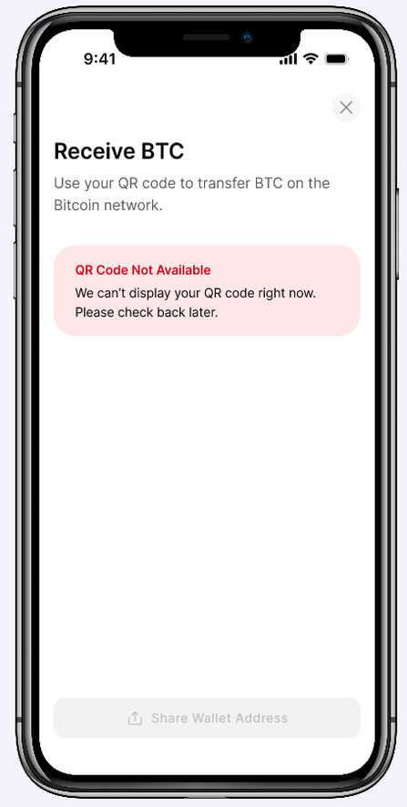

Giving customers control of their Bitcoin.
Building Axos's first send, receive, and saved wallet flows for Bitcoin, the first time customers could move crypto in and out of the bank on their own.


The first time a regulated bank let customers move crypto on their own.
Once customers could buy Bitcoin at Axos, they needed a way to move it. I designed the Send and Receive flows from scratch, along with saved wallet management, the first time Axos let customers transact directly with external wallets.
Axos holds Bitcoin through a third-party custodian in omnibus custody, so unlike Coinbase or Kraken, it can't credit a deposit the instant it confirms on-chain, and every transfer carries extra instruction, compliance checks, or review. My job was to absorb that complexity so customers didn't feel all of it at once, while keeping compliance, risk, and engineering confident in the result.
Designing inside someone else's rulebook.
- No internal precedent. Every pattern, from saved wallets to limit displays, had to be designed from scratch.
- The custodian's API enforces its own compliance logic (Travel Rule data, sanctions screening, wallet whitelisting) that the UI has to surface, not hide.
- Three transfer contexts (external wallets, other Axos customers, linked accounts) carry different risk and needed different levels of friction.
- Customers compare us to Coinbase and Kraken, which carry none of these constraints. The flows needed to feel modern, not bureaucratic.
Treating compliance as design material.
Sending Bitcoin out of a custodial account touches anti-money-laundering rules, sanctions screening, and transaction-purpose reporting. I treated each of those as design material, not a disclaimer to bury in fine print.


Saved wallets and address validation.
The recipient screen doubles as a saved wallet manager, since most people send to the same addresses again and again. When a customer enters a wallet address, it gets validated against a real sanctions and compliance check on the backend, not just a format check on the device.
New wallets show a Pending badge until they're approved. The custodian requires email authorization before an address can be used, which is more involved than a typical exchange. Rather than hiding that wait, I made it a visible status customers can come back to.
Purpose for sending.
No mainstream exchange asks customers to declare why they're sending Bitcoin, but regulatory reporting requires a purpose code before a transfer can go out. I designed this as its own step, with categories worded the way a customer would actually describe what they're doing (Gift, Reimbursement, Rebalance) instead of compliance taxonomy, so it reads as routine rather than an interrogation.
Amount and limits.
Send limits apply per source account, not per customer, so the active account's remaining room had to be unmistakable. I designed the limits module as a persistent progress bar rather than a static number, and reused it in a hard-stop screen for transfers that would go over, teaching the limit early instead of surprising the customer at submission.
Friction where the risk actually is.
SMS verification only appears on one path: internal transfers to another Axos customer above a set amount. That was a deliberate risk call with fraud and compliance, since third-party transfers are the pattern most associated with social-engineering scams. Sending to your own linked accounts skips it entirely, and external wallet sends route through address validation and purpose instead.

Same constraint, opposite direction.
Receiving has the same underlying custody model as sending, but it shows up in reverse: instead of validating who you're sending to, the customer needs to actively claim funds that already arrived.
Sharing the deposit address.
Most platforms cache a permanent deposit address, so the QR code is always there. Here, the address is generated on demand, which means a real chance it isn't ready when someone opens the screen. I designed an explicit QR Code Not Available state rather than letting the screen fail silently, so customers know to check back instead of assuming something is broken.
The Bitcoin-network-only notice under the address does real work too. A deposit sent on the wrong network can't be recovered, so this is the one mistake on the screen that can't be undone. It sits directly under the address rather than in a tooltip.

Approving an external deposit.
Unlike Coinbase or Kraken, Axos can't auto-credit an inbound Bitcoin deposit. The omnibus custody model needs explicit direction from the customer first, so I had to design an active approval step into a moment that's normally passive in crypto.
The deposit-received screen opens with a celebratory visual before asking the customer to act, so the first thing they feel is that money arrived. The Verify Deposit Information step (sender country, custody type) is a Travel Rule requirement most platforms handle passively. I kept the fields minimal and pre-filled the obvious case so it reads as a quick confirmation, not a compliance form.
After approval, funds still go through a review before they land, so I wrote the post-approval state honestly rather than implying it's final. Internal Axos-to-Axos transfers skip all of this and resolve in one auto-approved screen, a deliberate contrast that shows customers the fast path exists.
Cost basis as a deliberate, separate ask.
The cost-basis prompt after both deposit flows isn't required by the custodian. It's a product decision: most competitors ignore cost basis entirely or leave it for tax season, which turns into a support burden later. I surface it right away, but as a non-blocking note customers can come back to, so it doesn't compete with the more time-sensitive steps above it.
Separating what's required from what's a default.
Because this was net-new for the bank, a meaningful part of the work was getting compliance, risk, and the custodian's integration team aligned on which constraints were truly non-negotiable (sanctions screening, Travel Rule data, wallet whitelisting) and which were defaults I could soften in the UI.
The custodian's guidance on transfer rules sometimes shifted or contradicted earlier answers, so I pushed for clear answers instead of designing around the first one we got. That clarity is what let me keep friction where the risk actually was, and take it out everywhere else.
Engineering is building against these flows now, with launch targeted in the next few months. When it ships, Axos customers will be able to send Bitcoin to external wallets, other Axos customers, and their own linked accounts, and receive it back in, for the first time.
The throughline across both flows is the same: where the custody model genuinely can't move at exchange speed, the design says so plainly and gives the customer a clear next step. Where a constraint was a default rather than a requirement, I designed around it instead of passing it through. Buying and selling Bitcoin is covered in the crypto trading case study.